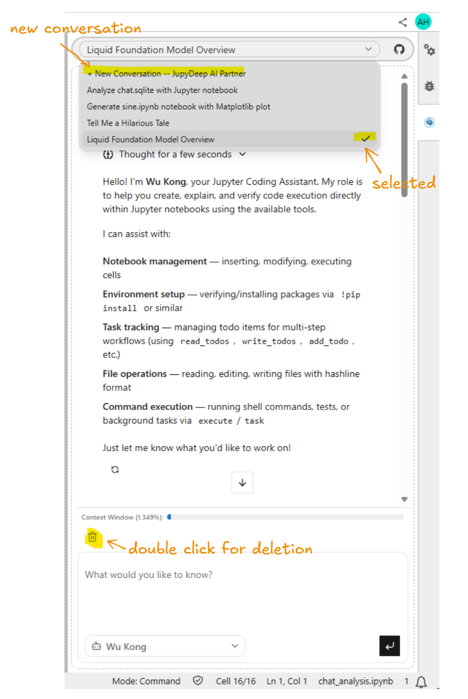
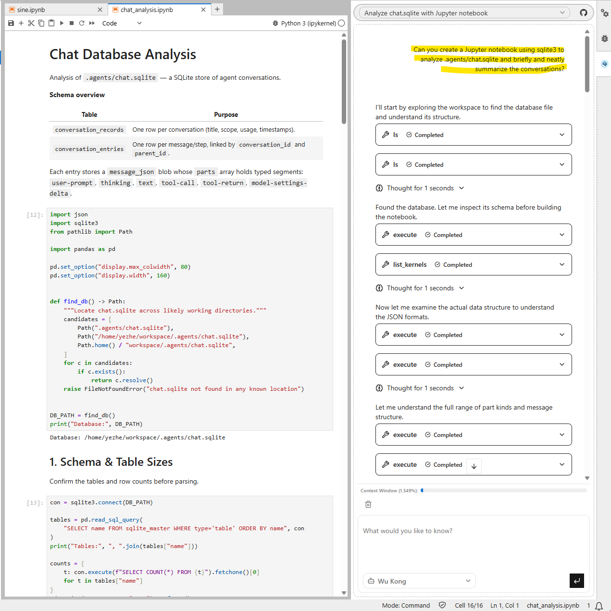

How to manage conversations
1. Stateful Conversations in Agent Workflows
In interactive AI agent environments, maintaining continuity across multi-turn reasoning and iterative data analysis is essential. Without persistent storage, session context is volatile—a browser refresh, kernel restart, or workspace reconnection discards valuable prompt histories, intermediate tool outputs, and reasoning chains.
To address this, JupyDeep introduces built-in Conversation Persistence and Management.
Backed by a lightweight, local SQLite storage engine (chat.sqlite) with Write-Ahead
Logging (WAL) and user-scoped isolation, JupyDeep automatically captures and organizes
every conversation thread directly within your project workspace—requiring zero external
database setup.
With conversation persistence enabled, users gain seamless session continuity, automatic AI-generated conversation titles, instant keyword search across past threads, and safeguarded double-click deletion. Whether you are resuming yesterday’s analysis, switching between parallel threads, or cleaning up outdated sessions, JupyDeep keeps your workspace dialogue organized and immediately accessible.
2. Managing Conversations in JupyDeep
Conversation persistence is enabled out of the box once JupyDeep is installed and running in JupyterLab. No manual database initialization is required; JupyDeep automatically provisions the local conversation store upon engine startup.
Suppose you start JupyterLab using the following command (adapt the parameters to match your environment):
uv run jupyter lab --ip=0.0.0.0 --no-browser --notebook-dir="/home/yezhq/workspace"
Upon startup, you will find chat.sqlite automatically created under
/home/yezhq/workspace/.agents/.
The conversation management workflow consists of three core capabilities accessible directly from the JupyDeep chat sidebar:
2.1 Starting a Conversation and Automatic Title Generation:
Open the JupyDeep panel in the right sidebar of JupyterLab. By default, the
top header selector displays + New Conversation -- JupyDeep AI Partner.


Select your preferred agent from the bottom combobox, enter your initial message, and send it. Once the first response completes:
JupyDeep persists both your prompt and the agent’s full response payload to
chat.sqliteunder your authenticated user scope.An asynchronous background task invokes a lightweight title-generation agent to summarize your initial prompt into a concise title (under 10 words).
The top conversation selector updates automatically via Server-Sent Events (SSE), replacing the placeholder label with the newly generated title.
2.2 Searching and Resuming Historical Conversations:
To revisit an earlier discussion, click the Conversation Combobox at the top of the JupyDeep chat panel. A dropdown menu lists up to your 50 most recently updated conversations, ordered by latest activity.
You can locate and resume any thread using the following controls:
Keyword Filtering: Start typing directly into the top combobox input field to filter historical conversations by title in real time.
Seamless Context Restoration: Selecting a conversation from the list loads its persisted message history into the chat viewport, allowing you to inspect prior outputs and continue the dialogue with full context.
Start Fresh Anytime: Selecting
+ New Conversation -- JupyDeep AI Partnerat the top of the list resets the viewport for a clean session without affecting saved threads.
Note
While an agent is actively streaming a response, the top conversation switcher is temporarily locked to prevent accidental context switches mid-generation.
2.3 Deleting Conversations with Double-Click Protection:
To remove outdated or unwanted sessions, locate the Trash (Delete) icon on the left side of the bottom input toolbar (refer to the screenshot above).
To prevent accidental data loss during active work, deletion requires a double-click:
Hover over the trash icon next to the agent selector.
Double-click the icon to confirm deletion.
If a response is currently streaming, JupyDeep halts generation first, removes the conversation record and associated message entries from
chat.sqliteusing optimistic revision checks, and resets the panel to a new conversation state.
3. Inspecting Local Storage and Programmatically Operating Conversation Data
All conversation metadata and message entries are stored locally inside your
workspace’s agent directory at <workspace>/.agents/chat.sqlite. Every
record is tagged with the authenticated Jupyter user scope and protected by
SQLite WAL mode alongside optimistic revision checks, ensuring multi-user
isolation and concurrency safety across browser tabs.
Because you have direct access to this standard SQLite database file, you can
inspect, query, and manipulate stored conversation records and message entries
using the sqlite3 CLI or standard Python database libraries. For example:
sqlite3 your_path_to/.agents/chat.sqlite
sqlite> .tables
conversation_entries conversation_records
sqlite> .schema conversation_records
CREATE TABLE conversation_records (
conversation_id TEXT PRIMARY KEY,
head_id TEXT,
scope TEXT,
title TEXT,
usage_json TEXT NOT NULL,
deferred_json TEXT,
forked_from TEXT,
forked_at TEXT,
branches_json TEXT NOT NULL DEFAULT '[]',
revision TEXT NOT NULL,
updated_at TEXT NOT NULL,
format_version INTEGER NOT NULL DEFAULT 1
);
CREATE INDEX idx_record_scope
ON conversation_records(scope, updated_at DESC);
sqlite> .schema conversation_entries
CREATE TABLE conversation_entries (
id TEXT PRIMARY KEY,
conversation_id TEXT NOT NULL,
parent_id TEXT,
kind TEXT NOT NULL DEFAULT 'message',
message_json TEXT NOT NULL,
created_at TEXT NOT NULL
);
CREATE INDEX idx_entry_conv ON conversation_entries(conversation_id);
sqlite> SELECT COUNT(*) FROM conversation_records;
4
sqlite> SELECT conversation_id, title FROM conversation_records ORDER BY updated_at DESC LIMIT 5;
f5888da9-95ba-4bc5-b83e-e1f263bdf773|Analyze chat.sqlite with Jupyter notebook
a570cbd4-0d33-4b57-b0ce-6f5b5ae0dedb|Generate sine.ipynb notebook with Matplotlib plot
440fcc2c-44f0-4aa9-9c7d-1742d53f29b9|Tell Me a Hilarious Tale
f03f3902-47ae-4cd8-b8d7-749c86c76d4c|Liquid Foundation Model Overview
Furthermore, you can instruct your JupyDeep agents directly to query this
SQLite database and analyze the raw conversation records in natural language.
For instance, the screenshot below demonstrates an agent summarizing the
existing conversation history stored in chat.sqlite using deepseek-v4.1-flash
with the following prompt:
Can you create a Jupyter notebook using sqlite3 to analyze .agents/chat.sqlite
and briefly and neatly summarize the conversations?


This direct access empowers developers and researchers to analyze historical conversation data, conduct deep behavioral audits of agent execution from raw records, and programmatically inspect or transform message trajectories—serving as a lightweight, complementary observability approach alongside full runtime instrumentation (such as MLflow Tracing).
Remarks
Built-in conversation persistence transforms JupyDeep from a transient chat
assistant into a durable workspace companion for iterative research and
engineering. Because conversations are stored locally in standard SQLite tables
(conversation_records and conversation_entries), your prompt histories
and notebook analysis context remain private on your machine or server—without
relying on external cloud storage. Combined with automatic AI titling, keyword
search, and direct SQLite queryability, teams and individual researchers can
maintain clean, auditable records of data exploration, code generation, and
debugging workflows across long-running projects.